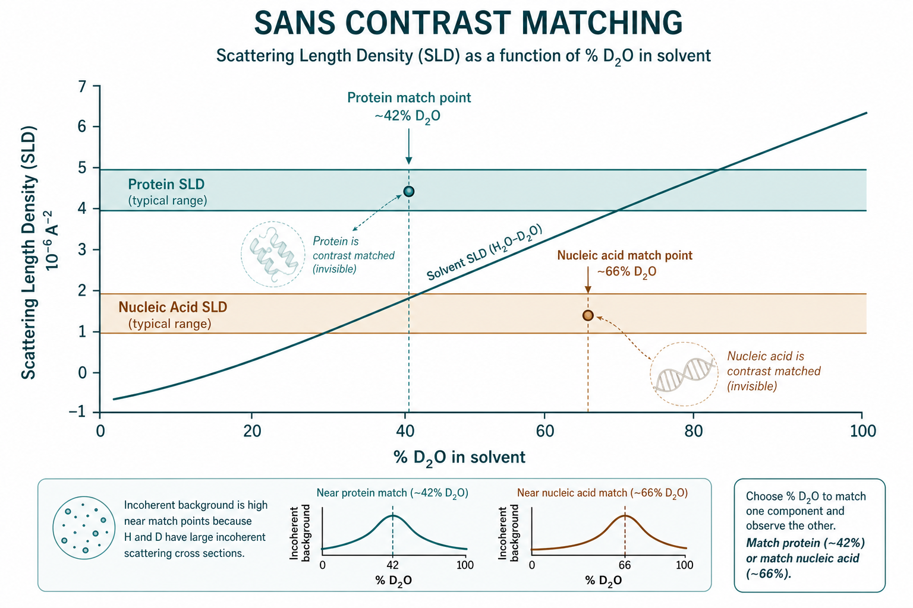

SANS 衬度变化与衬度匹配
Contrast variation / matching — H/D, solvents, and selective deuteration
本导读以 Krueger（2017）生物溶液 SANS 衬度变化实验设计章节为主线，结合 Jeffries 等（2021）SAXS/SANS 方法学 Primer、Grillo（2008）软物质 SANS 仪器与数据处理、SANS Soft Matter 教材第 2 章中子散射基础，以及 Knoll 等（1981）脂质相图经典对比度实验，说明为何中子特别适合「调衬度」、如何用 H2O/D2O 匹配与选择性氘代拆解多组分体系，以及实践中如何选匹配点、处理不相干本底与可交换质子。磁散射仅作边界提示，详见 磁 SANS 专题。
问题是什么
小角散射看到的不是「绝对密度」，而是粒子与溶剂之间的衬度 $\Delta\rho=\rho-\rho_s$。单组分、均匀粒子时，稀溶液强度近似
$$I(q)=n\,(\Delta\rho)^2\,V^2\,P(q)\,S(q),$$其中 $P(q)$ 为形式因子，$S(q)$ 为结构因子（稀溶液常取 $\approx 1$）。衬度一旦为零，该组分对相干散射「隐形」——这就是衬度匹配（contrast matching）。
X 射线（SAXS）的衬度来自电子密度差，只能靠改溶剂电子密度（盐、甘油、蔗糖等）或换材料；对蛋白质/核酸/脂质这类以氢为主的生物分子，可调空间窄，且化学扰动大。中子（SANS）则利用氢（H）与氘（D）相干散射长度符号与量级的巨大差异：$b_{\mathrm{H}}$ 为负、$b_{\mathrm{D}}$ 为正，溶剂从纯 H2O 扫到纯 D2O 时水的散射长度密度（SLD）可跨越约 $-0.56$ 到 $+6.4\times 10^{10}\,\mathrm{cm}^{-2}$（常用单位亦见 $\times 10^{-6}$ Å$^{-2}$），足以覆盖蛋白、核酸、脂质头基与碳氢链的典型 SLD（Krueger 2017；Grillo 2008）。中子还可探测磁结构（ Ch.2），但本专题聚焦核散射衬度，磁散射见专门专题。
因此核心问题是：何时值得做衬度变化系列（而非仅靠 SAXS），如何设计 H2O/D2O 匹配点与氘代策略，以及如何避免「匹配了却看不见」的假阴性（本底、交换、样品质量）。

SANS 衬度匹配示意" width="900">文献主线
Krueger 2017：生物多组分组装的衬度变化实验设计
该章是生物 SANS 衬度实验的操作手册：理论（$I=I_{\mathrm{coh}}+I_{\mathrm{inc}}$、$\Delta\rho$）、两组分复合物匹配点选择、$\sqrt{I(0)}$–%D2O 作图、数据拆解与 MONSA/SASREF 类建模衔接。核心实验设计步骤：
- 先算后测： 各组分 SLD 随 %D2O 变化（含可交换 H）；确认蛋白（$\sim 40\%$）、DNA/RNA（$>60\%$）、CH2 链（低 %）匹配点足够分离；
- 样品 QC： 与 BioSAS 相同——单分散、浓度系列、各衬度点组分比恒定；
- 缓冲系列： 至少 5–7 个 %D2O 点，覆盖两组分匹配点及两侧高衬度点；
- 透析平衡： 至目标 %D2O，记录时间/温度；用密度计或透射率验证溶剂组成；
- 本底与绝对强度： 每档 %D2O 精确匹配 blank；拟合 $I_{\mathrm{inc}}$；绝对标定便于 $\sqrt{I(0)}$ 分析；
- 分析： 匹配点 $\Delta\rho\to 0$ 时相干信号极弱——须更长计数；用 Stuhrmann 表或 MULCh 等校核 SLD；多衬度数据联合拟合（如 ATSAS MONSA）。
要点：（1）匹配点附近相干信号极弱，不相干本底相对放大；（2）蛋白约 40% D2O、DNA/RNA 更高、脂质碳氢链接近 0–10% D2O；（3）可交换质子使生物分子 SLD 随 %D2O 轻微上扬，匹配点预测必须计入交换（Krueger 2017）。
Jeffries 等 2021：SAXS 与 SANS 的方法学对照
Nature Reviews Methods Primer 把 SAXS/SANS 放在同一框架下：两者共享 $q$、$P(q)$、$S(q)$ 与绝对强度概念，但衬度机制不同。文中强调中子的 H/D 同位素对比是生物与软物质结构解析的独特杠杆——溶剂对比度扫描、部分氘代、与 SAXS 互补（电子密度 vs 核 SLD）是设计实验时的第一决策树（Jeffries 2021）。
Grillo 2008：SANS 仪器、绝对标定与衬度变化
软物质 SANS 经典章节涵盖：稳态（D22）与时飞（LOQ）仪器配置、透射率与多重散射、从原始计数到绝对截面（$\mathrm{d}\sigma/\mathrm{d}\Omega$）的归一化流程，以及 5.2 节 SLD、衬度匹配、零平均衬度法（ZAC）与氘标记极限。对衬度实验尤其重要的是：（1）$\Delta\lambda/\lambda \sim 10$–15% 导致 smearing，建模须卷积仪器分辨率；（2）4.6 节不相干本底扣除——高 H2O 分数时 $I_{\mathrm{inc}}$ 抬高平台；（3）5.2.2 衬度变化技术——通过溶剂 SLD 扫描使某相「隐形」以突出另一相的 $P(q)$。
SANS Soft Matter 教材 Ch.2：中子散射基础
第 2 章给出经典 SANS 仪器布局（引脚准直 + 二维探测器）、核散射与磁散射的区分：生物/软物质衬度实验主要用核相干散射长度 $b_j$，磁散射需极化束线与自旋分析（详见磁 SANS 专题， 仅作交叉引用）。章节强调绝对截面标定使 $I(0)\propto(\Delta\rho)^2$ 的定量解释成为可能，与 Krueger 实验设计中的 $\sqrt{I(0)}$ 作图一致。
Knoll, Ibel & Sackmann 1981：脂质相图的对比度法
早期用衬度变化在脂质混合物中分离组分贡献、绘制相图，证明「调溶剂 SLD + 同位素标记」可在真实软物质体系中解析内部结构（Knoll 1981）——思路直接延续到今日膜蛋白、脂质体与纳米载体实验：匹配缓冲液脂质链以突出蛋白，或匹配蛋白以观察膜重组。
聚合物与核–壳体系（补充）
聚合物胶体、嵌段共聚物常用氘代单体/溶剂拉开各嵌段 SLD，逻辑与生物两组分匹配相同：匹配一相、观察另一相 $P(q)$，或结合 SAXS（电子密度）与 SANS（核 SLD）互补约束。实验流程仍遵循 Krueger的「多衬度点 + 绝对强度 + 本底扣除」框架。
仪器与测量：Grillo 2008要点
| 环节 | 须测量/记录 | 衬度实验相关 |
|---|---|---|
| 准直 | 针孔几何、$q_{\min}$ | 低 $q$ 覆盖 Guinier；束斑 $\sim 10$–100 mm 致 smearing |
| 透射率 | 样品与缓冲各档 | %D2O 系列须逐档测量；用于绝对标定 |
| 标准样 | 水、固态聚合物等 | $\mathrm{d}\sigma/\mathrm{d}\Omega$ 绝对截面（ Ch.2） |
| 本底 | 空池、电子学本底 | 高 H 缓冲本底高；匹配点信噪最差 |
| 计数时间 | 按 $(\Delta\rho)^2$ 调整 | 匹配点延长曝光；高衬度点可缩短 |
SLD 与衬度：数学直觉
散射长度密度
体积 $V$ 内相干散射长度之和除以体积：
$$\rho=\frac{1}{V}\sum_j b_j,$$$b_j$ 为核的束缚相干散射长度。中子的 $b$ 不随原子序号单调变化，且 H/D 差别极大——这是「化学几乎不变、散射剧烈改变」的物理根源。
稀溶液强度与匹配
均匀粒子：
$$I(q)\propto n\,(\rho-\rho_s)^2\,V^2\,P(q).$$故 $\sqrt{I(0)}\propto|\Delta\rho|$（Krueger 2017）。对溶剂系列作 $\sqrt{I(0)}$（或 Stuhrmann 约定下的带符号 $\sqrt{I(0)}$）对 %D2O 的图，过零点即匹配点（contrast match point）。多组分时总振幅是各组分衬度加权贡献之和：
$$I(q)=\sum_{i,j} n_i n_j \, \Delta\rho_i \Delta\rho_j \, F_i(q) F_j(q) + \text{交叉项}$$匹配一点只消掉一个组分的平均 $\Delta\rho$，不等于内部结构消失；组分内部 SLD 不均匀（疏水核、糖基化、结合离子）会导致「残余散射」（Krueger 2017；Grillo 2008 §5.2.4）。
与 SAXS 电子密度衬度的区别
| SAXS | SANS | |
|---|---|---|
| 对比度来源 | 电子密度 $\rho_e$ | 核散射长度密度 $\rho$ |
| 主要调参手段 | 溶剂电子密度（盐、糖等）；材料本身 | H2O/D2O；选择性氘代 |
| 对氢 | 电子少，贡献弱 | H 强且 $b$ 为负；D 可大幅抬高 SLD |
| 典型用途 | 整体形状、$R_g$、快速筛选 | 拆组分、看氘代标签、匹配溶剂「隐形」一层 |
| 化学扰动 | 高浓度共溶剂可能改变构象/聚集 | 同位素替代通常生化扰动更小（仍须验证） |
何时用衬度变化，而非只做 SAXS： 需要分辨复合物中哪一部分在哪里（蛋白–核酸、蛋白–脂质、核–壳聚合物）；需要在接近生理缓冲下「关掉」某一组分；SAXS 电子密度几乎相同、无法区分的两相。若只关心整体 $R_g$/形状且单组分足够，优先 SAXS（通量高、源易得），再用一两档 SANS 衬度确认内部组织（Jeffries 2021）。
- 水：0% D2O $\rho_s\approx -0.56\times 10^{10}\,\mathrm{cm}^{-2}$；100% D2O $\approx 6.4\times 10^{10}\,\mathrm{cm}^{-2}$（中间近似线性插值；须实验透射/密度计校正）。
- 典型蛋白匹配点 $\sim 40\%$–$43\%$ D2O；DNA/RNA 更高（常 $>60\%$）；脂肪链（CH2）接近 0–10% D2O；全氘代（perdeuterated）组分匹配点 $>100\%$ D2O，实践中靠溶剂匹配「显形」。
- $I(0)\propto(\Delta\rho)^2$：离匹配点 10% D2O 与 20% 相比，信号可差约 4 倍——匹配点附近要更长计数或更高浓度（仍须保持稀溶液，$S(q)\approx 1$）。
- ${}^1$H 不相干截面远大于其他核 → 高 H2O 区本底高；匹配点常选在较高 %D2O 一侧若化学允许（Grillo §4.6）。
H2O/D2O 匹配
溶剂扫描
固定样品化学组成，配制一系列缓冲液（Krueger 2017 建议至少覆盖 0%、20%、30%、40%、50%、70%、100% D2O 中的 5–7 点，实际依匹配点间距调整），测量 $I(q)$ 并外推/拟合 $I(0)$。匹配点由 $\Delta\rho=0$ 给出；也可用 MULCh、序列统计或 Stuhrmann 表预估 SLD 与溶剂线相交，再用实验 $\sqrt{I(0)}$–%D2O 微调（Krueger 2017）。
Stuhrmann 作图与两组分拆解
对蛋白–DNA 等天然两组分，匹配蛋白后剩余曲线主要反映 DNA 的 $P(q)$（及弱交叉项）。Stuhrmann（1970）形式将 $\sqrt{I(0)}$ 对溶剂 SLD 作线性外推，交点即匹配点。三组分以上须更多独立衬度条件（选择性氘代、SAXS+SANS）才能唯一拆解——勿假设「两个匹配点 = 完全解卷积」（Krueger 2017）。
选择匹配点的实践
- 目标： 使组分 A 的有效 $\rho_A\approx\rho_s$，剩余 $I(q)$ 主要反映组分 B 的 $P_B(q)$（及 A–B 交叉项在完全匹配时的衰减）。
- 预估： 用序列/组成算 SLD（计入可交换 H）；蛋白常用 $\sim 40\%$ D2O 作初值。
- 验证： 匹配点附近 Guinier 仍应合理；$I(0)$ 对 %D2O 呈抛物线（$(\Delta\rho)^2$）；偏离预示聚集、相分离或交换未达平衡。
- 勿只测匹配点： 至少一侧高衬度点用于整体参数与绝对强度 sanity check（见 绝对标定）。
不相干本底
氢的不相干散射截面很大（Jacrot 1976；Grillo 2008 §4.6），故高 H2O 分数时 $I_{\mathrm{inc}}$ 抬高，平坦本底淹没弱相干信号。匹配点附近 $I_{\mathrm{coh}}$ 最小，本底问题最尖锐。实践：Trewhella 2017 建议用透析终液作 blank、封闭环境避免 ${}^1$H/${}^2$H 交换差异、透射率对纯 H2O/D2O 标定；高 $q$ 拟合平坦 $I_{\mathrm{inc}}$ 常数项，勿把平台误当作 Porod 尾（Krueger 2017）。SANS 还原中 ad hoc 加减常数强平高 $q$ 须在方法节说明。
可交换质子
连接在 N、O 上的氢会与溶剂 H/D 交换，使蛋白/核酸的有效 SLD 随 %D2O 轻微上升（碳上的不可交换 H 不变）。后果：
- 匹配点相对「无交换」计算值偏移；
- 透析/平衡时间不足 → 表观匹配点漂移；
- 完全氘代样品仍有可交换位点，须按缓冲 %D2O 校正。
实验上应充分透析至目标缓冲，并在计算 SLD 时使用交换分数（常用经验值或序列统计；Krueger 2017）。
多组分体系
两组分（如蛋白 + DNA）复合物的散射可写成各组分自相关与交叉项。衬度变化的目标是：在一组 %D2O（及可选氘代标签）下，分别突出组分 1、组分 2，并约束二者相对位置。
| 策略 | 做法 | 得到什么 | 注意 |
|---|---|---|---|
| 溶剂匹配组分 A | %D2O 调至 A 的匹配点 | 主要见 B 的形状 | A 的内部非均匀性、水合层可使「不完全隐形」 |
| 溶剂匹配组分 B | 调至 B 的匹配点 | 主要见 A | 两匹配点须足够分离，否则无法独立 |
| 选择性氘代 | 氘代 A 或 B（或脂质链） | 拉开匹配点；高衬度标签 | 表达/合成成本；验证结构未变 |
| SAXS + SANS | 同一缓冲的电子密度 vs 核 SLD | 互补约束 | 缓冲须同时适合两种束线 |
天然蛋白与 DNA 的匹配点本已分离；蛋白–蛋白复合物则常需氘代其中一方。脂质体/膜蛋白常匹配脂质双层以突出蛋白，或匹配蛋白以看膜重组（Knoll 1981）。Krueger给出核糖体、病毒衣壳等案例：至少测量「匹配 A」「匹配 B」「高衬度对照」三档方可开始刚体/MONSA 建模。
与 ATSAS 的衔接
多衬度 SANS 数据可导入 PRIMUS，用 MONSA（多相 ab initio）或 SASREFCV（刚体 + 衬度联合）拟合。各衬度点须先单独通过 Guinier/$p(r)$ QC（见 ATSAS 专题 步骤 5c）。CRYSOL/CRYSON 计算理论曲线时须指定各组分 SLD 与 %D2O（MULCh/Contrast 模块）。
- 先算后测： 各组分 SLD、溶剂线、预估匹配点；确认两匹配点间距 $>15$% D2O（经验）；全氘代组分须单独规划。
- 样品质量： 单分散、无聚集；各衬度点浓度与化学计量恒定；DLS/SEC/AUC 与 SANS 互证（Krueger 2017；Trewhella 2017）。
- 交换平衡： 透析至目标 %D2O（常 48–72 h，视分子量）；记录温度；重复透析检验匹配点漂移。
- 仪器与标定： 报告配置、$\Delta\lambda/\lambda$、透射率、绝对截面标准（水/聚合物标准）；Grillo 流程：通量 $\Phi_0$、立体角、多重散射检查。
- 本底： 每档 %D2O 精确匹配缓冲；高 H 区延长计数；拟合 $I_{\mathrm{inc}}$ 并报告。
- 数据点： 勿只测匹配点——两侧高衬度点用于 $R_g$、$M$ 与 $\sqrt{I(0)}$ 曲线形状 sanity check。
- 对照： 同条件 SAXS（若可行）核对整体 $R_g$；氘代/活性对照验证同位素未改相互作用。
- 建模： 多衬度联合拟合（MONSA/SASREFCV）；报告残余 $I(0)$ 与不完全匹配假设。
实践要点与坑
- 匹配点「信号消失」≠ 样品没了： 相干项为零时仍有不相干本底与仪器背景；须与空池/缓冲比较，勿误判为沉淀。
- 匹配不完全： 组分内部 SLD 不均匀（疏水核、糖基化、结合离子）→ 无单一完美匹配点；报告残余 $I(0)$ 与模型假设。
- 交换未完成 → 如何判断： 重复透析后匹配点移动；$R_g$ 随时间变。延长平衡或升温（在样品稳定前提下）。
- 高 H2O 不相干淹没： 匹配点落在低 %D2O 时统计极差 → 氘代另一组分把工作点移向高 D2O，或提高通量/浓度（仍稀释）。
- 氘代改变相互作用： 少数体系同位素影响折叠或寡聚 → 用 SAXS/SEC/活性对照验证。
- $S(q)$ 污染： 浓度过高时结构因子随衬度变化扭曲形状解释 → 稀释或显式建模 $P(q)S(q)$。
- 把 SAXS 形状直接当各组分形状： SAXS 是电子密度加权整体；组分分解必须靠 SANS 衬度系列或氘代标签（Jeffries 2021）。
- 仪器 smearing 未处理 → 如何判断： 宽 $\Delta\lambda/\lambda$ 或大盘探测器下 Bragg 峰或振荡被抹平。用 Grillo 流程评估分辨率，建模时卷积仪器函数（；）。
- 与磁散射混淆 → 如何判断： 加磁场后 $I(q)$ 各向异性变化——属磁 SANS，非核衬度匹配；见 磁 SANS 专题。
相关词条
衬度、 散射长度密度（SLD）、 形式因子 $P(q)$、 结构因子 $S(q)$、 前向散射 $I(0)$、 散射矢量 $q$
相关链接
- 02 散射基础 — $q$、衬度、$P(q)$ 与 $S(q)$
- BioSAS 专题 — 溶液生物大分子整体分析管线
- 绝对标定 — $I(0)$ 与 $(\Delta\rho)^2$ 定量解释的前提
- ATSAS 工具链 — MONSA/SASREFCV 多衬度建模
文献列表
- Designing and performing biological solution small-angle neutron scattering contrast variation experiments on multi-component assemblies. Susan Krueger (2017). DOI: 10.1007/978-981-10-6038-0_5
- Small-angle X-ray and neutron scattering. Cy M. Jeffries et al. (2021). DOI: 10.1038/s43586-021-00064-9
- Small-angle neutron scattering and applications in soft condensed matter. I. Grillo (2008). DOI: 10.1007/978-1-4020-4465-6_13
- Small-angle neutron scattering study of lipid phase diagrams by the contrast variation method. Wolfgang Knoll, Konrad Ibel, Erich Sackmann (1981). DOI: 10.1021/bi00525a015
- 2017 publication guidelines for structural modelling of small-angle scattering data from biomolecules in solution: an update. Jill Trewhella et al. (2017). DOI: 10.1107/S2059798317011597
注：SANS Soft Matter 教材 Ch.2 为书籍章节，无独立文章 DOI；磁散射见 磁 SANS 专题。